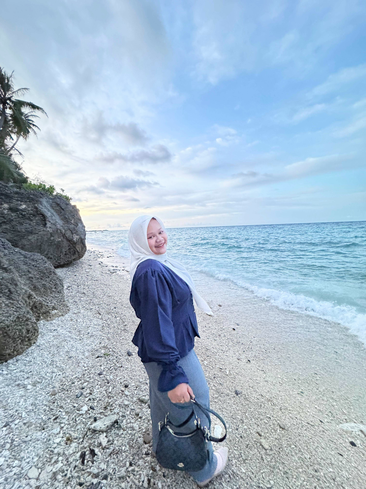

HTML
Menyusun struktur halaman yang semantik dan rapi.
0%
Halo, saya
Mahasiswa yang jatuh cinta pada dunia web, merangkai kode dan desain menjadi pengalaman yang rapi, hidup, dan enak dilihat.

Saya Zafira Ismi Samahiya, mahasiswa yang sedang menekuni dunia web development. Semuanya bermula dari rasa penasaran. Setelah mencoba satu baris kode dan melihat hasilnya muncul di layar, saya sadar bahwa inilah hal yang ingin saya dalami dengan serius.
Saat ini saya sedang mempelajari HTML untuk membangun struktur, CSS untuk membentuk tampilan, dan JavaScript untuk menghidupkan interaksi. Bagi saya, coding bukan sekadar menghafal sintaks. Coding adalah cara berpikir: memecah masalah besar menjadi langkah kecil, lalu menyusunnya hingga bekerja dengan baik.
Sebagai mahasiswa yang melangkah ke dunia engineering, saya belajar bahwa teknologi yang baik harus tepat guna, rapi, dan nyaman dipakai. Karena itu saya juga mendalami UI/UX, supaya setiap halaman yang saya buat bukan hanya berfungsi, tetapi juga terasa indah dan mudah digunakan.
Saya belajar pelan-pelan tetapi konsisten. Harapan saya, kelak menjadi developer yang kuat secara teknis dan punya ciri khas di setiap karya. Semua ini masih proses, dan saya menikmati setiap langkahnya.
Tiga fondasi yang sedang terus saya asah setiap hari.
Menyusun struktur halaman yang semantik dan rapi.
Membentuk tampilan, layout responsif, dan animasi halus.
Menghidupkan halaman dengan logika dan interaksi.
Pendidikan dan pengalaman yang membentuk saya.
Mahasiswa yang mendalami web development dan dasar-dasar engineering.
Pengalaman langsung di lingkungan kerja profesional.
21 sampai 24 Juni 2022 di Banda Aceh, diselenggarakan UPTD Balai Teknologi Komunikasi dan Informasi Pendidikan, Dinas Pendidikan Aceh.
Pendidikan menengah kejuruan yang menjadi awal perjalanan saya.
Beberapa karya yang pernah saya bangun sambil belajar.
Website streaming video sederhana seperti Netflix dengan fitur putar video dan tampilan modern.
Buka projectWebsite terbaru yang sedang saya kembangkan dengan tampilan yang lebih segar dan modern.
Buka projectDashboard broadcast manual untuk mengelola pesan, kontak, campaign, dan memantau aktivitas secara terstruktur.
Buka projectWebsite Ujian Akhir Semester berbasis web dengan desain modern, responsif, dan fitur yang mendukung kebutuhan pengguna.
Buka projectWebsite presensi untuk mencatat kehadiran mahasiswa dengan lebih praktis, terstruktur, dan mudah digunakan.
Buka projectKlik gambar untuk melihat lebih besar.
Punya ide, pertanyaan, atau ingin berkolaborasi? Saya senang mengobrol.